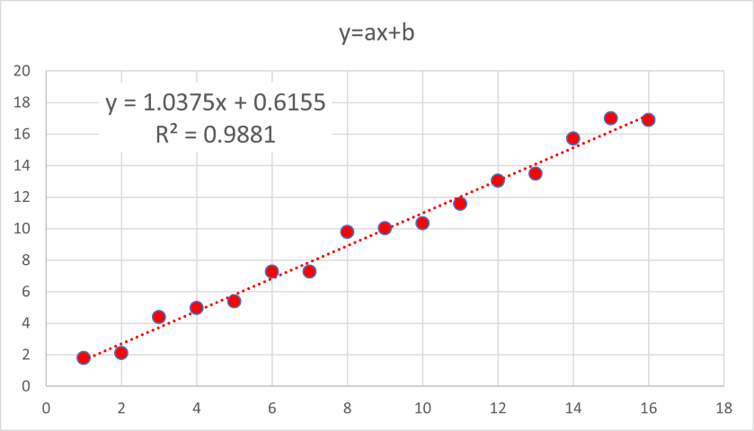
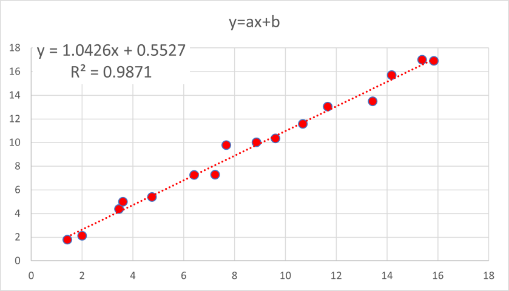

エクセルでの近似 - R二乗値の求め方 - 01
エクセルでの近似について考えます．特に，R二乗値，R2，について．
R2は，０～１の値をとり，1に近いほど，より良い近似，とされています．
では，いままで勉強してきた，決定係数，相関係数，とどのような関係にあるのでしょう？
決定係数は，Wiki，によると，複数あり，どうも，R12，R72，がよく使われるようです．
また，直線近似の場合は，ここで示したように，相関係数2＝決定係数，となります．
まずは，
・基本の直線近似（切片あり），
\( \Large \displaystyle y=ax+b \)
で．
a = 1
b = 1
でランダム関数によりばらつきを与えています（オフィスバージョンは365）

\( \Large \displaystyle R^2=\color{red}{0.9881} \)
相関係数は，
\( \Large Cov = \frac{\displaystyle \sum_{i=1}^n (x_i - \overline{x})(y_i - \overline{y}) }{\sqrt{\displaystyle \sum_{i=1}^n (x_i - \overline{x} )^2} \sqrt{\displaystyle \sum_{i=1}^n (y_i - \overline{y} )^2} } = 0.9940\)
\( \Large Cov^2 = \color{red}{0.9881} \)
となり，一致します．
決定係数，R12，は，
\( \Large R_1^2 = 1 - \frac{\displaystyle \sum_{i=1}^n (y_i - \overline{y})^2 }{\displaystyle \sum_{i=1}^n (y_i - \overline{y} )^2} = \color{red}{0.9881} \)
となり，直線近似（切片あり)は，決定係数，R12，を示すものと思われます．
次に，
・基本の直線近似（切片固定）
場合はどうなるのでしょう？
\( \Large \displaystyle R^2=0.9881 \)
相関係数は，
\( \Large Cov = \frac{\displaystyle \sum_{i=1}^n (x_i - \overline{x})(y_i - \overline{y}) }{\sqrt{\displaystyle \sum_{i=1}^n (x_i - \overline{x} )^2} \sqrt{\displaystyle \sum_{i=1}^n (y_i - \overline{y} )^2} } = 0.9940\)
となり，
\( \Large Cov^2 = = 0.9881 \)
となり，一致します．
決定係数，R12，は，
\( \Large R_1^2 = 1 - \frac{\displaystyle \sum_{i=1}^n (y_i - \overline{y})^2 }{\displaystyle \sum_{i=1}^n (y_i - \overline{y} )^2} = 0.9881 \)
となり，直線近似（切片固定)は，決定係数，R12，を示すものと思われます．
次に，
・基本の直線近似（切片あり，ｘもばらつく）
場合はどうなるのでしょう？

\( \Large \displaystyle R^2=0.9871 \)
相関係数は，
\( \Large Cov = \frac{\displaystyle \sum_{i=1}^n (x_i - \overline{x})(y_i - \overline{y}) }{\sqrt{\displaystyle \sum_{i=1}^n (x_i - \overline{x} )^2} \sqrt{\displaystyle \sum_{i=1}^n (y_i - \overline{y} )^2} } = 0.9935\)
となり，
\( \Large Cov^2 = = 0.9871 \)
となり，一致します．
決定係数，R12，は，
\( \Large R_1^2 = 1 - \frac{\displaystyle \sum_{i=1}^n (y_i - \overline{y})^2 }{\displaystyle \sum_{i=1}^n (y_i - \overline{y} )^2} = 0.9871 \)
となり，直線近似（切片あり，ｘもばらつく）は，決定係数，R12，を示すものと思われます．
次に，直線近似（切片なし），直線近似（切片固定），を考えましょう．